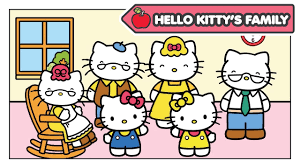

Hello Kitty was born on November 1st, in the suberbs of london and lives with her parents and her twin sister Mimmy. She is as tall as five apples and has white fur. Her favorite hobbies include traveling, music, reading, and eating yummy cookies. She often wears a red bow on her left ear.
Her Blood type is type A and her favorite dessert is her moms favorite apple pie.
Above is a picture of Hello Kitty and her family.